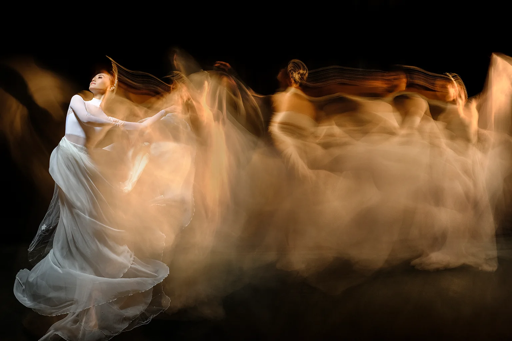

了解
从舞龄、舞种、性格与经历开始，认识镜头前的你，也了解你想表达什么。
DANCE PHOTOGRAPHY · GUANGZHOU / CHINA
十年专注，只为定格你起舞的骄傲
将瞬间定格成永恒，让艺术再一次升华。
WHO WE ARE / 01
舞者的内心用肢体来表达，有灵魂的照片自己会说话。
舞摄影创立于2016年，以摄影与专业舞蹈指导双核协作，为舞者构思独属于自己的影像。我们相信，真正动人的照片不止于动作准确，更在于力量、节奏与情绪被看见。
SELECTED WORKS / 02
从芭蕾的延展与克制，到当代舞的张力与情绪。我们不把舞者放进同一个模板，而是从每个人的特点出发，寻找最合适的表达。
精选作品 · 持续更新
 01 / PORTRAIT舞者肖像21-2019-06-18马明皓 · 舞者肖像
01 / PORTRAIT舞者肖像21-2019-06-18马明皓 · 舞者肖像
 02 / CHINESE教室的日常广舞 · 中国舞影像
02 / CHINESE教室的日常广舞 · 中国舞影像
 03 / CHINESE地板上的弧线广舞14级 · 中国舞影像
03 / CHINESE地板上的弧线广舞14级 · 中国舞影像
 04 / CHINESE红蝶之梦广舞14级 · 中国舞影像
04 / CHINESE红蝶之梦广舞14级 · 中国舞影像
 05 / BALLET粉末的瞬间黄平 · 芭蕾舞影像
05 / BALLET粉末的瞬间黄平 · 芭蕾舞影像
 06 / MODERN画框之外龚璐珂 · 现代舞影像
06 / MODERN画框之外龚璐珂 · 现代舞影像
 07 / BALLET展开的黑羽果果 · 芭蕾舞影像
07 / BALLET展开的黑羽果果 · 芭蕾舞影像
 08 / BALLET双人舞剧广芭25周年 · 团体影像
08 / BALLET双人舞剧广芭25周年 · 团体影像
 09 / BALLET跳跃的雕塑魏巍 · 芭蕾舞影像
09 / BALLET跳跃的雕塑魏巍 · 芭蕾舞影像
 10 / BALLET暗调中的白纱黄平 · 芭蕾舞影像
10 / BALLET暗调中的白纱黄平 · 芭蕾舞影像
 11 / LATIN双人的默契李烨·何程 · 拉丁舞影像
11 / LATIN双人的默契李烨·何程 · 拉丁舞影像
 12 / BALLET白纱的弧线杜明 · 芭蕾舞影像
12 / BALLET白纱的弧线杜明 · 芭蕾舞影像
 13 / BALLET黑白的群像广芭25周年 · 团体影像
13 / BALLET黑白的群像广芭25周年 · 团体影像
 14 / BALLET窗边的黑天鹅果果 · 芭蕾舞影像
14 / BALLET窗边的黑天鹅果果 · 芭蕾舞影像
 15 / PORTRAIT红纱的旋转刘光宇 · 舞者肖像
15 / PORTRAIT红纱的旋转刘光宇 · 舞者肖像
 16 / BALLET灰墙上的芭蕾黄平 · 芭蕾舞影像
16 / BALLET灰墙上的芭蕾黄平 · 芭蕾舞影像
 17 / PORTRAIT悬浮的力量任楠 · 舞者肖像
17 / PORTRAIT悬浮的力量任楠 · 舞者肖像
 18 / BALLET暗涌与力量高越 · 芭蕾舞影像
18 / BALLET暗涌与力量高越 · 芭蕾舞影像
 19 / BALLET轻盈与光高越 · 芭蕾舞影像
19 / BALLET轻盈与光高越 · 芭蕾舞影像
 20 / BALLET线条与力量黄平 · 芭蕾舞影像
20 / BALLET线条与力量黄平 · 芭蕾舞影像
 21 / BALLET身体的诗孙欣 · 芭蕾舞影像
21 / BALLET身体的诗孙欣 · 芭蕾舞影像
 22 / PORTRAIT在光影之间孙欣 · 舞者肖像
22 / PORTRAIT在光影之间孙欣 · 舞者肖像
OUR APPROACH / 03
1 + 1 不是简单叠加。
是让专业，在同一个画面里相遇。

有灵魂的照片，
自己会说话。
从舞龄、舞种、性格与经历开始，认识镜头前的你，也了解你想表达什么。
找到你的优势、气质与故事，让拍摄不是单向指令，而是共同创作。
根据舞者特点设计主题，统筹动作、光线、服装、妆容、道具与场景。
以专业指导调整姿态、角度与幅度，进一步激发身体表达和情绪，让舞姿准确，也让画面有灵魂。
ORIGINALITY IS A PRACTICE
我们不以同行作品、流行模板，甚至自己过去的照片作为拍摄脚本。既往作品是经验的积累，不是下一次创作的标准答案。每次拍摄都从舞者本身出发，重新判断光线、动作、情绪与场景。我们重视原创构思，也坚持长期打磨自己的服务体系与作品标准。
VISUAL DIRECTIONS / 04
影像语言服务于舞者，
而不是让舞者适应模板。
我们以舞蹈本身为起点，结合舞者的技术能力、气质与表达意图，探索不同的影像方向。以下是创作语言，不是固定套餐；实际方案会在沟通后确定。
CINEMATIC PORTRAIT
以光影层次、空间关系与画面节奏，构建具有叙事感的舞蹈人像。
CREATIVE SCENE
从舞者特点出发，让道具、材质、色彩与空间成为动作表达的一部分。
ATMOSPHERIC IMAGE
不止呈现动作，也关注停顿、呼吸、目光与身体里的情绪线索。
ENVIRONMENTAL PORTRAIT
把舞者放回真实空间，让环境与身体形成关系，拓展舞蹈影像的叙事可能。
BLACK & WHITE
以明暗、线条、肌肉张力和形体结构，回到舞蹈最纯粹的视觉语言。
CLASSICAL FORM
尊重舞蹈规范与身体真实，让控制力、延展感和舞者的个人特质共同成立。
OUR SPACE / 05
广州番禺 · 舞摄影艺术空间
约1200㎡创作空间，包含120㎡、层高5.5米的纯白影棚与6个置景影棚。服装间、化妆间、休息室、洽谈室、展厅与淋浴间，让拍摄过程更从容，也为不同舞种与创作方向保留更多可能。
距广州地铁22号线出口约350米，广州南站乘地铁一站可达。具体到访路线请在预约后与我们确认。
BOOKING LOCATIONS
各地档期与具体拍摄安排请提前咨询。跨城市预约将根据当期团队行程确认。
THE EXPERIENCE / 06
从第一次沟通到最终交付，每一步都有明确的流程。你不需要独自面对镜头，也不必在拍摄前就想好所有答案。
了解舞龄、舞种、拍摄用途、希望呈现的感觉与特殊需求。
服装由客户准备，专业老师提前沟通搭配建议；套餐包含专业化妆服务。
根据舞者程度指导动作、表现与镜头关系，现场统筹光线和构图。
拍摄后确认订单与精修内容，由团队手工完成后期制作。
拍摄时长会随套餐与造型需求变化。特殊道具、粉末效果、外景及异地拍摄须提前沟通，相关费用与安排以预约时确认的订单说明为准。
THE FOUNDERS / 07
专业并非单一环节的成果，而是摄影审美、舞蹈判断与后期标准之间长期磨合的结果。
CO-FOUNDER / PHOTOGRAPHER
联合创始人 · 首席摄影师 · 艺术总监
2002年毕业于广州美术学院，高级摄影师，广东省摄影家协会会员，广东广播电视台特邀摄影师、IPA国际摄影学院特约讲师、《人像摄影》杂志俱乐部讲师及人像摄影青年摄影师大赛评委。长期研究舞蹈与光影，重视人体结构、画面秩序与后期真实感。
CO-FOUNDER / DANCE DIRECTOR
联合创始人 · 舞蹈编导 · 舞蹈指导
毕业于沈阳音乐学院附中芭蕾舞专业。大学师从北京舞蹈学院马力学教授民族民间舞专业、选修现代舞；毕业后随马老师研发《龙族律动》系列舞蹈课程并担任首席教官。
长期的专业学习、课程研发与教学实践，让她对舞者身体开发、肢体语言表达有深刻独到的见解。拍摄中，她从身体条件、技术程度、动作逻辑与情绪表达出发，帮助舞者找到更准确、自然且具有个人特征的表达方式。
她负责拍摄前的动作构思与现场指导，根据舞者的能力、身体条件、气质与表达，调整姿态、角度和完成度；同时参与后期舞姿审视，确保专业性与真实感。
OUR STORY / OUR BELIEF / 08
我们相信，舞蹈不只是动作的完成，也是一个人长期训练、身体记忆、情绪与生命经验的表达。影像的意义，是让这些短暂却珍贵的东西，有机会被看见、被记住。
THE BRAND STORY · 品牌故事
舞摄影创立于2016年。我们逐渐确定了一条属于自己的创作路径：让专业摄影与专业舞蹈指导在同一个现场协作。摄影师关注光线、构图、质感与最终影像；舞蹈老师理解动作、身体规范、舞者的能力边界与肢体语言。两种专业互相校准，才能让画面既好看，也真正理解舞蹈。
十年来，我们持续为不同年龄、不同舞种、不同阶段的舞者创作影像。从第一次站到镜头前的孩子，到有丰富舞台经验的专业舞者，每个人都有自己的身体语言。我们想做的不是把所有人拍成同一种样子，而是帮助每个人呈现出更接近自己的状态。
A JOURNEY OF TEN YEARS · 发展历程
以舞者专属影像定制为方向，在广州开启持续的舞蹈影像创作。
将摄影与专业舞蹈指导放在同一个创作流程中，从动作、光线到情绪表达共同完成作品。
获得 IPA 国际艺术展、AUPWave SEECAA 等赛事与展览奖项。
郭荣基获得 AWPA 最高荣誉年度大奖及年度摄影师称号。
获得 ID-DANCE 中韩国际舞蹈影像金奖，持续探索舞蹈身体与摄影语言的关系。
在广州深耕，同时开放沈阳、深圳、杭州等城市预约；让专业创作方法与更多舞者相遇。
A NOTE FROM DANCE PHOTOGRAPHY · 舞摄影初心
我们不把流行模板当成创作的终点，也不把过去的成功当成下一次拍摄的标准答案。每一次创作都应回到舞者本人：她是谁、她如何运动、她想表达什么。我们愿意花时间理解、判断、尝试与打磨，因为真正值得留下的影像，不该只是短暂流行的复制品。
十年专注，只为定格你起舞的骄傲。
将瞬间定格成永恒，让艺术再一次升华。
舞摄影将专业舞蹈指导与摄影创作结合。拍摄不是让舞者照着参考图模仿，而是由赵老师根据舞者特点设计动作、调整姿态与情绪，郭老师同步设计光线和构图，现场共同完成原创影像。
可以。我们会根据舞者的年龄、舞种、技术程度与镜头经验提供相应指导。你不需要提前准备一套标准动作，沟通和引导本身就是拍摄流程的一部分。
包括芭蕾、现代舞、当代舞、民族民间舞等舞蹈人像，以及电影感、创意场景、氛围感、环境人像、情绪向舞蹈人像、黑白摄影等方向。我们会结合舞者的特点和拍摄目的讨论方案，而不是简单套用固定风格模板。
服装建议自行准备，专业老师会提前沟通搭配；现场也可咨询可选服装。舞摄影提供赵老师研发的软鞋（可购买），并可提供足尖鞋作为拍摄道具。请提前告知特殊服装或鞋款需求。
一套服装通常约1.5–2小时，包含沟通、造型、拍摄和选片等环节；选片后约一个半月内交付。不同套餐和实际需求会影响拍摄时长，后期全部由团队手工精修。
请先提供舞龄、舞种、拍摄用途、期望效果、所在城市与计划日期，确认套餐及档期后支付1000元定金，预约正式生效。定金有效期、改期时间、订单确认与尾款等具体条款，以预约时双方确认的服务说明和订单为准；建议尽早提出改期需求。
可以讨论。外景、特殊道具、吊床或粉末效果需要提前沟通档期、场地与安全要求；场地、门票及异地工作人员差旅等实际费用，按事先确认的方案承担。特殊效果的费用与订单内容以预约时确认为准。
接受。我们为专业舞者、舞蹈学生、舞蹈爱好者及舞蹈机构提供影像服务，合作单位包括广州芭蕾舞团、广州歌舞剧院、广州市艺术学校、广东舞蹈学校等。机构合作可在联系时说明人数、舞种、用途与时间安排。
START A CONVERSATION / 10
告诉我们你是谁、跳什么舞，以及你想留下怎样的画面。
电话 / 微信同号
电话 / 微信同号
咨询时可附上舞种、舞龄、拍摄用途、所在城市、计划日期与喜欢的影像方向，方便我们更快了解你的需求。两个号码均可添加微信。